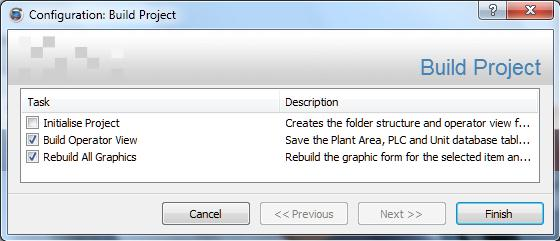

Note: In Adroit all MAPS-related PLC functionality is disabled.
As mentioned in the overview, MAPS provides a more structured approach to automation projects, such as the adherence to an extended physical model of the S88/S95 hierarchical structure and the need for the engineers to PLAN the following BEFORE creating a MAPS project:
IMPORTANT: This does NOT link the link the MAPS project (and database) to the EPLAN database, so you cannot take advantage of the complete automation solution life-cycle management provided by MAPS.
Tip: Although you can bulk-configure this project using MS Excel, by exporting the project to Microsoft Excel, we recommend that you first use the MAPS Project wizard to create at least one Plant Area, PLC, Unit and Equipment – to understand the required syntax and requirements for these items. For details, see Bulk configuring MAPS projects .
Pre-requisites
Note: You need to create a SmartUI project for EACH of your process Sites.
The Project Name page of the MAPS project wizard opens, so that you can configure the MAPS project-specific settings.
WARNING! You CANNOT rename this SmartUI Project name.
Note: Use the Properties right click option to change these settings after creating a SmartUI project.
The GENERIC project report template provides the
S88/S95 hierarchy, which includes  the following separate lists of each hierarchy level:
the following separate lists of each hierarchy level:
Tip: You can customise this GENERIC project report template, for example, by adding your company logo to its title. For details, see Customizing report templates.
then do the following: Default Screen size: Specify the required screen resolution of ALL the graphic forms of your MAPS project, by selecting the required screen dimensions, in pixels, from the list.
MAPS then automatically adjusts the size of ALL your graphic forms in this project to fit onto the selected screen resolution.
Since one of the purposes of the Operator View, which is generated by each MAPS project, is to provide navigation through the defined plant areas, PLCs, units and equipment, MAPS projects allow you to Select Operator View Layout, as follows:
Advanced: this view provides a navigational structure of different panes, which each provide buttons that display the available plant areas, PLCs, units and equipment defined in your MAPS project.
Note: This view is more visually appealing and allows your operators to customise this view by hiding or showing the different panes, as needed.
Simple: this view uses menus and sub menus to navigate through the available plant areas, PLCs, units and equipment defined in your MAPS project.
Note: This view provides the same functionality as the Advanced view only in a simpler navigational format.
IMPORTANT: Only check the Empty Project checkbox to MANUALLY add plant areas, PLCs, Units and equipment to this site (SmartUI project) - in this case, clicking Next ends this wizard.
The Plant Area Data page opens so that you can define the various areas within this process site (SmartUI project). Add a row to the Plant Area Data table for each plant area and complete the following fields:
Note: To delete a row, select it and press the DELETE key and click Yes in the deletion confirmation dialog.
WARNING! You CANNOT rename this plant area name.
Note: Ensure that each plant area name is unique.
If necessary, you can specify a remote SmartUI Server,
as follows:
Typically this SmartUI Server provides a connection to a single Agent Server that contains the SCADA tags for this plant area.
Click here if you have more than one Agent Server connected to a SmartUI server:
The OPTIONAL Plant Area Code if specified, this (unique 5-character alphanumeric) code becomes the prefix that is used for all the equipment items defined within this plant area.
This is recommended as it helps to ensure unique and identifiable tag names in the project, that allow you to easily differentiate your plant equipment.
Note: You will only advance to the PLC Data page once all the MANDATORY fields are correctly completed for all the added plant areas.
The PLC Data page opens so that you can specify the PLCs containing the tags within each plant area. Add a row to the top PLC Data table for each PLC and complete the following fields:
WARNING! You CANNOT rename this PLC name.
Note: Ensure that each PLC name is unique.
This list specifies all the previously defined plant areas.
Note: If the Agent Server specified for a plant area is Offline then type in an appropriate Adroit Device name, since you CANNOT continue to the next page until a device is specified for EACH PLC!
Select the required PLC (row of the top PLC Data table) and define its IO address ranges accordingly.
Note: You are unable to continue to the next page of this wizard until you have specified a start and end value for ALL the specified IO of EACH PLC.
Note: You will only advance to the Unit Data page once all the MANDATORY fields are correctly completed for all the added PLCs.
The Unit Data page opens so that you can specify the unit/s (tag groupings) within each PLC of this process site (MAPS project). Add a row to the Unit Data table for each unit and complete the following fields:
WARNING! You CANNOT rename this unit name.
Note: Ensure that each Unit name is unique.
This list specifies all the previously defined PLCs.
Note: You will only advance to the Electrical Data page once all the MANDATORY fields are correctly completed for all the added units.
In MAPS, each type of electrical equipment requires an associated MAPS template. For more details, see Electrical equipment templates.
In the case of complex items of equipment that consist of more than one piece of electrical and/or instrumentation equipment, like conveyors - create a Unit for this item of equipment and associate all the component electrical equipment to MAPS templates.
The Electrical Data page opens so that you can specify the required quantities of MAPS templates to represent your electrical equipment within this process site (MAPS project).
Add a row to MAPSthe Electrical Data table for each type of SmartUI template that you need and complete the following fields:
Default Electrical equipment templates: the electrical equipment templates
Once a template is selected, click the Template Description field to display a description of exactly which type of electrical equipment this MAPS template represents.
This should specify the TOTAL number of this type of electrical equipment with the entire process site (MAPS project).
WARNING! Once you click the Next button, you are UNABLE to return to this page again, so ensure that this is correctly specified.
Tip: If your estimation is NOT exact, you can always add other MAPS templates manually.
Note: You will only advance to the Electrical Detail Data page when quantities are specified for all the added electrical equipment templates.
The Electrical Detail Data page opens so that you can configure the individual items of electrical equipment of this process site (MAPS project).
Each row of the Electrical Equipment Detail Data table represents an item of electrical equipment that is associated to a MAPS template, which requires the configuration of the following fields:
By default, the quantities of each MAPS electrical equipment template, as specified in the Electrical Data page, are added as individual rows.
Note: Rows can be manually added and configured from scratch, if you need additional items of electrical equipment.
WARNING! You CANNOT rename this equipment name.
Note: Do not rely on the uniqueness of the specified suffix, if you manually add rows this suffix resets itself to 0001.
Tip: If you specify any duplicate equipment names, these are flagged (one-by-one) when you click the Next button, so that you can correct these.
Typically the provided template graphics will always list one or more ISO representations (of the associated ISO 14617 symbol, if one exists for this item of equipment) at the top of the list, which may be followed by one or more physical representations of this item of equipment.
Ensure that you select the graphical representation, which provides the required orientation of this item of equipment.
Note: If you check the Create tags checkbox, this will increase the time required to create the SmartUI project.
If you do NOT check the Create tags checkbox for this item of equipment, then AFTER finishing this wizard, select the Sync tags right click option for this MAPS project in the MAPS window.
Note: You will only advance to the Instrumentation Data page once all the MANDATORY fields are correctly completed for your electrical equipment and all of their names are unique.
In MAPS, each type of instrumentation equipment requires an associated MAPS template. For more details, see Instrumentation equipment templates.
In the case of complex items of equipment that consist of more than one piece of instrumentation and/or electrical equipment, like conveyors - create a Unit for this item of equipment and associate all the component instrumentation equipment to MAPS templates.
The Instrumentation Data page opens so that you can specify the required quantities of MAPS templates to represent your electrical equipment within this process site (MAPS project).
Add a row to the Instrumentation Data table for each type of MAPS template that you need and complete the following fields:
Default Instrumentation equipment templates: the instrumentation equipment templates
Once a template is selected, click the Template Description field to display a description of exactly which type of instrumentation equipment this MAPS template represents.
This should specify the TOTAL number of this type of instrumentation equipment with the entire process site (MAPS project).
WARNING! Once you click the Next button, you are UNABLE to return to this page again, so ensure that this is correctly specified.
Tip: If your estimation is NOT exact, you can always add other MAPS templates manually.
Note: You will only advance to the Instrumentation Detail Data page when quantities are specified for all the added instrumentation equipment templates.
The Instrumentation Detail Data page opens so that you can configure the individual items of instrumentation equipment of this process site (MAPS project).
Each row of the Instrumentation Equipment Detail Data table represents an item of instrumentation equipment that is associated to a MAPS template, which requires the configuration of the following fields:
By default, the quantities of each MAPS instrumentation equipment template, as specified in the Instrumentation Data page, are added as individual rows.
Note: Rows can be manually added and configured from scratch, if you need additional items of instrumentation equipment.
WARNING! You CANNOT rename this equipment name.
Note: Do not rely on the uniqueness of the specified suffix, if you manually add rows this suffix resets itself to 0001.
Tip: If you specify any duplicate equipment names, these are flagged (one-by-one) when you click the Next button, so that you can correct these.
Specify the MANDATORY Graphic that represents this item of instrumentation equipment in the SCADA representation of this unit - therefore ensure that you select the graphic that provides the required orientation of this graphic.
The available graphical representations depend upon the selected template. For details, see Electrical equipment templates.
Typically the provided template graphics will always list one or more ISO representations (of the associated ISO 14617 symbol, if one exists for this item of equipment) at the top of the list, which may be followed by one or more physical representations of this item of equipment with different orientations.
Note: If you check the Create tags checkbox, this will increase the time required to create the SmartUI project.
If you do NOT check the Create tags checkbox for this item of equipment, then AFTER finishing this wizard, select the Sync tags right click option for this MAPS project in the MAPS window.
IMPORTANT: If you selected the Create tags checkbox for any electrical or instrumentation equipment, then you need to START the relevant Adroit AGENT SERVER applications BEFORE you CLICK theFinish button so that this process can occur.
If you selected the Create tags checkbox for any electrical or instrumentation equipment, then their associated SCADA tags are created and any other necessary SCADA configuration is performed - provided the relevant Agent Servers have been started.
This creates the SCADA tags in Adroit for each item of equipment and performs any other necessary SCADA configuration required by each MAPS template, such as scanning, logging, alarming and/or trending.
Right click the MAPS project and select Build Project and ensure that ONLY the following two options are checked in the resultant dialog and then click the Finish button:

Build Operator View: to ensure that the Operator view graphic form is aware of the default (and custom) SCADA views – so that it can automatically provide the necessary navigation between them. For more details of working with and using the Operator view graphic form, see Working with the OperatorView.
Tip: You can use the Manage Operator View right click menu option of the MAPS Project to specify which graphic forms to display in the Operator view.
Tip: Each right click option in the MAPS window provides a tool-tip explaining the function of the menu item - just hold your mouse pointer over it for quick reference.
Note: Each project component in the MAPS window provides its own right click Properties item to configure its settings EXCEPT its name. For details, see Properties of each hierarchy level (component) of a MAPS project.
If you corrupt or make a mistake when configuring the standard graphic forms and need to reset them to their default configurations, then right click the MAPS Project in the MAPS window, select the Build Project option and ensure that ONLY the Rebuild All Graphics option is checked in the resultant dialog and click Finish.